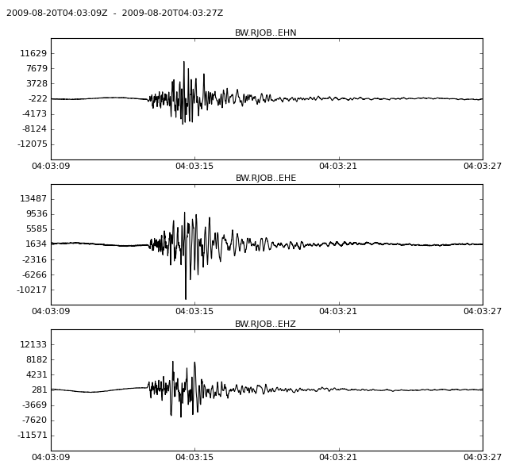

The obspy.neries package contains a client for the Seismic Data Portal (http://www.seismicportal.eu) which was developed under the European Commission-funded NERIES project. The Portal provides a single point of access to diverse, distributed European earthquake data provided in a unique joint initiative by observatories and research institutes in and around Europe.
| copyright: | The ObsPy Development Team (devs@obspy.org) |
|---|---|
| license: | GNU Lesser General Public License, Version 3 (http://www.gnu.org/copyleft/lesser.html) |
getEvents(): The following example illustrates how to request all earthquakes of a magnitude of >=9 in the year 2004.
>>> from obspy.neries import Client
>>> client = Client(user='test@obspy.org')
>>> events = client.getEvents(min_datetime="2004-01-01",
... max_datetime="2005-01-01",
... min_magnitude=9)
>>> len(events)
1
>>> events
[{'author': u'CSEM', 'event_id': u'20041226_0000148', 'origin_id': 127773,
'longitude': 95.724, 'datetime': UTCDateTime(2004, 12, 26, 0, 58, 50),
'depth': -10.0, 'magnitude': 9.3, 'magnitude_type': u'mw',
'latitude': 3.498, 'flynn_region': u'OFF W COAST OF NORTHERN SUMATRA'}]
getLatestEvents(): Returns only the latest earthquakes.
>>> from obspy.neries import Client
>>> client = Client(user='test@obspy.org')
>>> events = client.getLatestEvents(num=5, format='list')
>>> len(events)
5
>>> events[0]
[{'author': u'CSEM', 'event_id': u'20041226_0000148', 'origin_id': 127773,
'longitude': 95.724, 'datetime': u'2004-12-26T00:58:50Z', 'depth': -10.0,
'magnitude': 9.3, 'magnitude_type': u'mw', 'latitude': 3.498,
'flynn_region': u'OFF W COAST OF NORTHERN SUMATRA'}]
getEventDetail(): Returns additional information for each event by a given event_id.
>>> from obspy.neries import Client
>>> client = Client(user='test@obspy.org')
>>> result = client.getEventDetail("20041226_0000148", 'list')
>>> len(result) # Number of calculated origins
11
>>> result[0] # Details about first calculated origin
{'author': u'CSEM', 'event_id': u'20041226_0000148', 'origin_id': 127773,
'longitude': 95.724, 'datetime': UTCDateTime(2004, 12, 26, 0, 58, 50),
'depth': -10.0, 'magnitude': 9.3, 'magnitude_type': u'mw',
'latitude': 3.498, 'flynn_region': u'OFF W COAST OF NORTHERN SUMATRA'}
getWaveform(): Wraps a NERIES Web service build on top of the ArcLink protocol. Here we give a small example how to fetch and display waveforms.
>>> from obspy.neries import Client
>>> from obspy import UTCDateTime
>>> client = Client(user='test@obspy.org')
>>> dt = UTCDateTime("2009-08-20 04:03:12")
>>> st = client.getWaveform("BW", "RJOB", "", "EH*", dt - 3, dt + 15)
>>> st.plot()

getTravelTimes(): Wraps a Taup Web service, an utility to compute arrival times using a few default velocity models such as 'iasp91', 'ak135' or 'qdt'.
>>> from obspy.neries import Client
>>> client = Client(user='test@obspy.org')
>>> locations = [(48.0, 12.0), (48.1, 12.0)]
>>> result = client.getTravelTimes(latitude=20.0, longitude=20.0,
... depth=10.0, locations=locations,
... model='iasp91')
>>> len(result)
2
>>> result[0]
{'P': 356981.13561726053, 'S': 646841.5619481194}
| client.Client | NERIES Web service request client. |